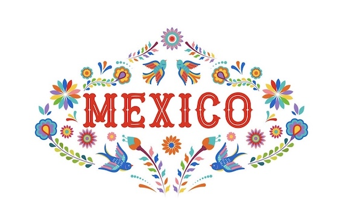
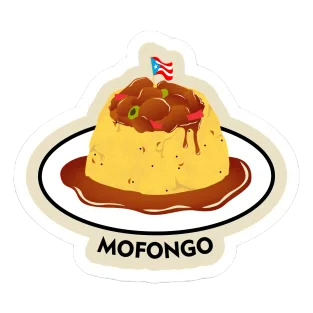

Wir sind leidenschaftliche Entdecker und Gourmets, die sich auf eine kulinarische Reise rund um die Welt begeben haben. Unsere Mission ist es, die Vielfalt und die Geschichten hinter den Nationalgerichten der Welt zu entdecken, zu kosten und zu teilen.
Mit einem starken Verlangen, neue Kulturen durch ihre kulinarischen Traditionen zu erkunden, reisen wir von Kontinent zu Kontinent, von Land zu Land. Wir suchen nach den authentischsten Geschmacksrichtungen und den faszinierendsten Geschichten, die jedes Gericht erzählt.
Unsere Reisen haben uns nicht nur die Freuden der Gastronomie nähergebracht, sondern auch das Verständnis für die Menschen und Kulturen, die diese Gerichte kreieren. Wir haben gelernt, dass Essen eine universelle Sprache ist, die Verbindungen zwischen Menschen schafft und Brücken zwischen verschiedenen Welten baut.
Aber unsere Leidenschaft geht noch weiter. Wir möchten nicht nur die Gerichte genießen, sondern auch lernen, sie selbst zuzubereiten. Unser Ziel ist es, die Geheimnisse und die Kunst hinter jedem Nationalgericht zu entschlüsseln und diese Fähigkeiten mit Ihnen zu teilen.
Treten Sie mit uns in die Welt der kulinarischen Entdeckungen ein, teilen Sie unsere Leidenschaft für Geschmack und Kultur, und lassen Sie uns gemeinsam die Reise fortsetzen, um die köstlichen Geheimnisse der Welt zu erkunden und zu genießen
Submit!

Tacos:
📖 Geschichte:
Die Geschichte der Tacos erstreckt sich bis in die präkolumbianische Ära, wo sie als gefüllte, dünne Tortillas von den indigenen Völkern in Mexiko vorbereitet wurden.
Selbst nach der spanischen Eroberung, bei der neue Zutaten wie Rind- und Schweinefleisch eingeführt wurden, blieb die Tradition des Zusammenfaltens von Tortillas mit einer Vielzahl von Füllungen erhalten, wodurch Tacos zu einem zeitlosen und vielfältigen mexikanischen Gericht wurden.
📝 Zutaten:
Für die Tacos selbst:
8 Weizentortillas oder Maistortillas (je nach Personenanzahl)
500 Gramm Rindfleisch (z. B. Rinderhackfleisch oder Rindersteakstreifen)
1 Zwiebel, gewürfelt
2 Knoblauchzehen, gehackt
1 Esslöffel Pflanzenöl zum Braten
Salz und Pfeffer nach Geschmack
Für die Taco-Füllung:
2 Tomaten, gewürfelt
1 Tasse gehackter Eisbergslat oder Blattsalat
1 Tasse geriebener Cheddar-Käse oder Monterey Jack-Käse
1 Tasse saure Sahne oder griechischer joghurt
1 Avocado, in scheiben gechnitten
1 Limette, in Keile geschnitten
Für die Taco-Gewürzmischung (optional):
1 Teelöffel gemahlener Kreuzkümmel
1 Teelöfffel Paprikapulver (mild oder scharf)
1/2 Teelöfffel gemahlener Chili
🥘 Zubereitung:
Das Fleisch nach Wahl (z. B. Rind, Huhn, Schwein) in einer Pfanne mit Pflanzenöl anbraten und mit Salz und Pfeffer würzen.
Die Zwiebeln und den Knoblauch hinzufügen und anbraten, bis sie weich sind.
Die Weizentortillas kurz in einer trockenen Pfanne oder in der Mikrowelle erhitzen, bis sie warm sind.
Die Tortillas mit der Fleischmischung füllen und nach Belieben mit Tomaten, Salat, Käse und saurer Sahne belegen.
Die Tacos zusammenklappen und servieren. Optional mit Limettenscheiben garnieren.
Falls du jetzt noch mehr über die Mexikanische Esskulutr efahren möchtest sieh dir dieses Video an:
Mofongo:

📖 Geschichte:
Mofongo hat seine Wurzeln in der historischen Epoche der afrikanischen Sklaverei in der Karibik, als die Einheimischen die kulinarischen Techniken und Traditionen der mitgebrachten afrikanischen Sklaven übernahmen. Diese afrikanischen Sklaven brachten das Wissen über die Zubereitung von Kochbananen mit sich und passten es an die karibische Umgebung an.
Mofongo ist somit nicht nur ein kulinarisches Erlebnis, sondern auch ein historisches Symbol für die kulturelle Verschmelzung und die kulinarische Anpassung, die in der karibischen Region stattgefunden hat. Es erinnert an die Geschichte und die verschiedenen Einflüsse, die die regionale Küche geprägt haben.
📝 Zutaten:
Für das Mofongo:
3 grüne Kochbananen
4 Knoblauchzehen, gehackt
2 Esslöffel Pflanzenöl
Salz nach Geschmack
Fett oder Brühe zum Frittiren
Für die Mofongo-Soße:
1/2 Tasse Hühner- oder Gemüsebrühe
2 Esslöffel Olivenöl
2 Knoblauchzehen, gehackt
Salz und Pfeffer nach Geschmack
Für die Mofongo-Füllung:
Gebratenes Fleisch
Soße nach Wahl (z.B. Knoblauchsoße, Tomatensoße etc.)
🥘 Zubereitung:
Grüne Kochbananen schälen und in Scheiben schneiden.
Die Kochbananenscheiben in heißem Öl frittieren, bis sie goldbraun und knusprig sind.
Die frittierten Kochbananen aus dem Öl nehmen und auf Küchenpapier abtropfen lassen.
Die Knoblauchzehen in einer Pfanne mit Öl anbraten, bis sie duften.
Die frittierten Kochbananen und den angebratenen Knoblauch in einem Mörser oder einer Schüssel zerdrücken und gut vermischen.
Mit Salz abschmecken und zu einer kugelförmigen Portion Mofongo formen.
Das Mofongo auf einem Teller anrichten und nach Belieben mit gebratenem Fleisch, Soße oder Beilagen servieren.
Falls du jetzt noch mehr über die Puerto Ricoanische Esskulutr efahren möchtest sieh dir dieses Video an:
Adobo
📖 Geschichte:
Während der spanischen Kolonialzeit brachten die Spanier neue Zutaten und Kochtechniken auf die Philippinen, darunter Gewürze wie Essig und Sojasauce. Diese Zutaten wurden in die einheimische Küche integriert und führten zur Entwicklung von Adobo.
Der Name "Adobo" leitet sich vom spanischen Wort "adobar" ab, was "marinieren" oder "würzen" bedeutet. Adobo wurde ursprünglich als Methode zur Konservierung von Fleisch entwickelt. Fleisch, oft Huhn, Schwein oder Rind, wurde in einer Mischung aus Essig, Sojasauce, Knoblauch und Gewürzen mariniert, um es haltbar zu machen.
Die Kombination von Essig und Sojasauce verleiht Adobo seinen charakteristischen Geschmack, der süß, salzig und sauer zugleich ist.
📝 Zutaten
Für das Adobo:
3500 Gramm Hühnerfleisch oder Schweinefleisch (oder eine Kombination aus beiden), in mundgerechte Stücke geschnitten
1 Zwiebel, gehackt
4 Knoblauchzehen, gehackt
1 Lorbeerblatt
1 Teelöffel schwarze Pfefferkörner
2 Esslöffel Pflanzenöl (z. B. Sojaöl)
1 Tasse Essig (weißer Essig oder Reisessig)
1/2 Tasse Sojasauce
1 Tasse Wasser
Salz nach Geschmack
Für die Adobo-Beilage
Gekochter Reis
Gekochte Eier (hart gekocht und geschält)
Geschnittene Tomaten und Gurken
🥘 Zubereitung:
Fleisch (Hühnerfleisch, Schweinefleisch oder eine Kombination) in mundgerechte Stücke schneiden.
Zwiebeln und Knoblauch hacken.
Pflanzenöl in einer Pfanne erhitzen und das Fleisch darin anbraten, bis es braun ist.
Die gehackten Zwiebeln und Knoblauch hinzufügen und anbraten, bis sie weich sind.
Lorbeerblatt und schwarze Pfefferkörner hinzufügen.
Essig, Sojasauce und Wasser in die Pfanne gießen.
Die Hitze reduzieren und das Adobo köcheln lassen, bis das Fleisch zart und durchgekocht ist.
Mit Salz nach Geschmack abschmecken.
Das Adobo heiß servieren, oft mit Reis.
Falls du jetzt noch mehr über die Philippinische Esskulutr efahren möchtest sieh dir dieses Video an:
Follow Us! 📸
Verpasse keine unserer kulinarischen Entdeckungen und Geschichtenerzählungen! Folge uns auf unseren sozialen Medien, um mit uns auf eine einzigartige Reise durch die Welt der Aromen und Kulturen zu gehen. Lass dich von unseren Rezepten, Fotos und Geschichten inspirieren und sei Teil unserer leidenschaftlichen Food-Community.
Kontaktiere uns!
Wir freuen uns über dein Interesse an "Taste n Tales". Wenn du Fragen, Anregungen oder Anfragen hast, zögere bitte nicht, uns zu kontaktieren. Unser Team steht dir gerne zur Verfügung, um deine Anliegen zu klären.
Kontaktinformationen:
E-mail:
Contact@TastenTales.de
Telefon:
08232 51 78 106
Wir bemühen uns, so schnell wie möglich zu antworten und sind gespannt darauf, von dir zu hören. Vielen Dank für deine Unterstützung und Interesse an unseren kulinarischen Abenteuern!